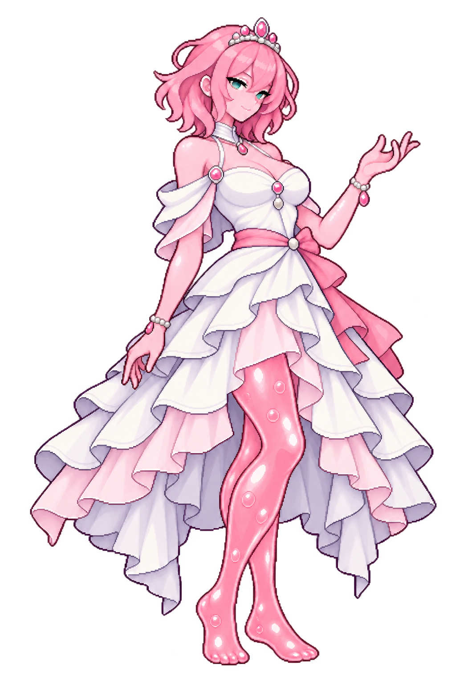

Roselle Vey
Rose-pink slime queen with pink-tinted upper body, two slender gel legs and flat gel feet


Full-body inspection · v5Open full sprite
Full body contained
Latest revision
Subtle pink upper-body tint, earlier elegant pose, exactly two slender slime legs and flat gel feet.
Original design changes
- Pearl/rose-quartz diadem and simplified asymmetric ivory gown
- Faint rose tint on face, neck, shoulders, arms and hands
- Two slender full gel legs with no leg-like side ornaments or heels
Gold treatment
Gold borders replaced by pearl/rose-quartz fittings.
Design accepted · 25 October 2026Current sprite accepted by you. Working name remains a label.